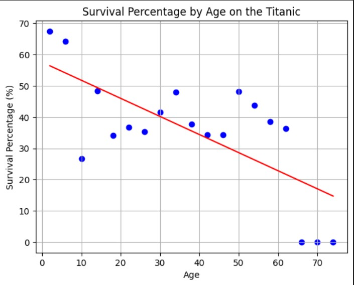

A machine learning project that uses linear regression to predicting the survival chance of Titanic passengers
Why choose this?
Although this project has no real use outside of being interesting, i believe it shows just how different the survival chance of Age and Class really mattered back on the Titanic.
This project aims to predicate the survival chance of people who were on the titanic.
This project used liner regression to test the capability of it, even though for a project such as this something such as Random Forest would be preferred.
When making predictions to this project, data such as the Age, Gender, Survived were used for these predictions.
With this being such a niche project idea, there was only one place to get the dataset needed to make these predications, that being Kaggle.
The dataset taken from Kaggle was for the majority useful, however there were missing data throughout the dataset that was dropped when it cam to the coding, as having these null or empty values could troublesome and give inaccurate predications.
So as the data was being cleaned (removing empty values), generating a graph would be possible.
Using python, I was able to design a Graph using scatter plots to design a liner regression models.
This model showcases the survival Chace with different age groups during the Titanic.
During the sinking of the Titanic, Women and children were the first to be on the life rafts, because of this as seen by the graph children had a higher survival chance. Class does also come into effect with this as 1st class were also the first to be released onto the life rafts.
this is to showcase the use of liner reggression, trying to see how differnt data sets work with it.
Using Titanic survial chance for a liner regression model is not the best use as something like ranodm forest would be preferable, but for this project liner regression was used to test the boundries of it.
going into this my knowledge of liner regression was very limited, so the use of online material was very helpful in the understanding of this.
Sources such as Python Data Science Handbook as a starting point, provide great information and graphs on how to start and detailed explanations on which piece of code.
This helped me to begin my project and get a better understanding of how liner regression works.
This project was done using Jupiter notebook, which i am already familiar with. However i was not familiar with Pandas and NumPy.
Using NumPy allowed me to perform numerical operations seamlessly and improved the performance of my data processing tasks, especially when dealing with large datasets.
Pandas significantly streamlined my data preparation and analysis process, enabling me to focus on extracting insights rather than managing data complexities. Its intuitive syntax and powerful features allowed for efficient data manipulation and exploration.
In summary, NumPy and Pandas were integral to my project, facilitating efficient numerical computations and data manipulations. Their capabilities enabled me to derive meaningful insights from the Titanic dataset.
The dataset taken from Kaggle was not the best, missing data fields and non numerical values which could not be used properly for liner regression.
due to this I had to undergo data cleansing and understanding of the data. this meant removing any empty values which could cause problems with the predications. also needed to know what each data field meat and how to use that for calculations, using only relevant data.